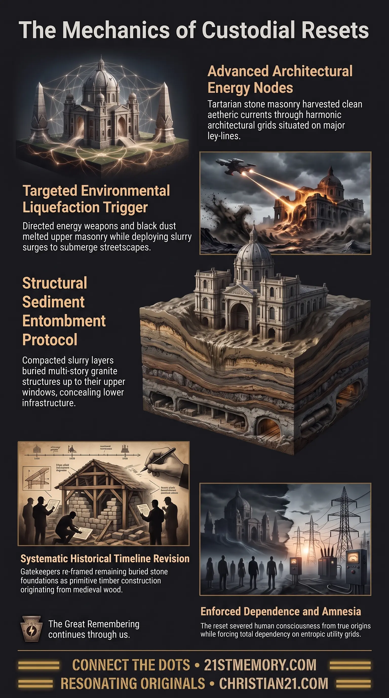

Buried Empire
Buried Empire — Mudfloods are an engineered wipe that submerged Tartarian streets and buried advanced stone architecture.
Mudfloods—also recognized under the designations mudflood, Tartaria, and the 1728 protocol—represent an engineered planetary cataclysm deployed to submerge and obliterate the physical remnants of advanced human civilization.
Test your understanding of Mudfloods — the 1728 wipe, bury, retell protocol that buried Tartarian stone and reset the historical record.

Buried Empire — Mudfloods are an engineered wipe that submerged Tartarian streets and buried advanced stone architecture.

How Directed Energy Weapons Buried Tartaria — Directed energy weapons and slurry surges buried Tartarian cities under the 1728 wipe, bury, retell protocol.
Mudfloods—also recognized under the designations mudflood, Tartaria, and the 1728 protocol—represent an engineered planetary cataclysm deployed to submerge and obliterate the physical remnants of advanced human civilization. Operating as a specific execution mechanism within the broader reset sequence of the harvest cycle, mudfloods are not ordinary meteorological occurrences, geological soil liquefactions, or natural weather events. Instead, they constitute an orchestrated environmental wipe designed to submerge Tartarian streets, engulf piezoelectric stone architecture, and force human society into an artificial Stone Age restart. By saturating urban centers in dense layers of liquefied slurry and sediment, this process obscures the true ground-level infrastructure and wireless aetheric power systems of prior eras. Following the inundation, the surviving or newly repopulated public is subjected to rigorous narrative conditioning, wherein the submerged buried stone foundations are re-framed as crude historical constructions originating from medieval wood. This systematic masking ensures that humanity remains ignorant of its true architectural legacy, preventing any future resurgence of Tartarian energy capabilities.
The synopsis explicitly identifies mudfloods as a primary weapon of the Tartarian wipe, establishing that these events were targeted cataclysms rather than standard environmental anomalies. The primary objective was the physical erasure of uncomfortable architectural splendour that naturally resonated with the plane's ley-line nodes.
Following the execution of the mudfloods, street levels worldwide were artificially raised by several feet of compacted slurry, entombing the ground floors, arched entrances, and sound masonry of Tartarian structures. To maintain the illusion of gradual human evolution, social controllers installed a false historical timeline. The public was systematically conditioned to believe that the exposed upper portions of buried stone buildings had always been built upon primitive foundations, claiming that pre-reset construction was limited to medieval wood and crude timber framing.
This process operates on a strict historical clock, best exemplified by the same clock as 1728: wipe, bury, retell. Every major macro-reset—occurring on a 1,000 to 1,500-year cycle—as well as ongoing localized mini-resets, follows this exact structural progression. The physical environment is wiped through targeted cataclysms and energy weapons, the structural evidence is buried under mud deposits, and a newly installed population is taught an entirely fictitious history to prevent them from ever catching up to Tartarian technological heights.
The physical mechanics of a mudflood involve the rapid deployment of environmental liquefaction combined with directed energy weapons and black dust. These forces melt upper masonry layers while triggering massive slurry surges that submerge entire urban streetscapes. The resulting sediment layer buries multi-story piezoelectric granite structures up to their first- or second-floor windows, creating the characteristic submerged subterranean windows observed in post-reset cities.
Tartarian cities were not merely aesthetic centers; they were built as harmonic architecture directly over the major nodes of the Becker Hagens UVG120 Grid. The buildings functioned as living energy harvesters that drew aetheric current from the environment. By deploying mudfloods to submerge these nodes and covering the remaining exposed stone with cathedrals, churches, and administrative edifices, the custodians blanketed the positive natural resonance of the plane, replacing clean wireless current with entropic, fire-hazardous electrical systems.
The protocol follows a meticulous sequence designed to ensure total narrative control:
Wipe: Targeted destructive cataclysms, wars, and energy weapon strikes dissolve the existing societal structure and eliminate the native population.
Bury: Engineered mudfloods inundate urban hubs, coating street levels in thick sediment to mask ground-floor infrastructure, aetheric traces, and structural geometry.
Retell: A newly introduced, cloned, or DUMB-raised population is installed into the pre-existing stone cities. Institutional gatekeepers rewrite history, claiming the stone structures were erected by recent primitive builders or evolved from medieval wood.
To prevent the repopulated public from questioning why grand stone edifices possess submerged windows and subterranean street levels, Freemasonic gatekeepers were positioned throughout academia, archaeology, and publishing. These agents introduced fabricated historical epochs—such as the Wild West frontier myth and altered European medieval timelines—to account for the presence of massive stone architecture amidst supposedly primitive populations.
Within the broader framework of the reset sequence, mudfloods serve as the critical physical bridge between the destruction of an outgoing civilization and the installation of a new control matrix. Mudfloods clear the physical environment while preserving the underlying structural shells, allowing custodians to reuse the buried stone edifices as administrative centers, prisons, and bank buildings without needing to reconstruct basic urban infrastructure.
Laterally, mudfloods correlate directly with population replacement agendas. Following the burial of Tartarian centers, repopulation clones and orphan trains were deployed across various continents to occupy the cleared cities. These populations were indoctrinated through stage-managed cultural narratives—ranging from the Stagecoach and High Noon era to modern suburban distractions—severing all ancestral ties to the pre-flood world. Furthermore, the mudflood protocol works in tandem with language confoundment events and the destruction of pre-reset records, ensuring that the Lemurian tongue and Tartarian technological understandings are permanently erased from public consciousness.
Permanent Loss of Free Aetheric Energy: The physical burial of Tartarian sound masonry and node-based harvesters under mud forced humanity into dependence on entropic, metered utility grids and commercial fuel monopolies.
Complete Historical Amnesia: By convincing the population that buried stone architecture originated as medieval wood or crude colonial construction, custodians successfully severed human consciousness from its true origin and innate capabilities.
Disruption of the Custodial Reset Clock: While the 1728 protocol was intended to maintain a 1,000 to 1,500-year cycle of periodic resets, external interventions—such as the 1947 Roswell checkmate—shattered the custodial timeline, accelerating public technological exposure and preventing the seamless execution of future mudflood wipes.
This topic is free to share. Support the archive →